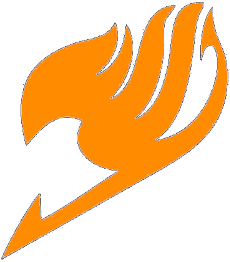

Tairy Fail
A fundação da guilda Tairy Fail veio através de uma
idéia entre xJedy e
Matheus dragneel, a guilda inicialmente seria
apenas para conteúdos For Fun, no entanto com o
crescimento no youtube Matheus Dragneel veio
acolhendo algumas pessoas em sua guilda com isso a
Tairy Fail começou obter vários outros jogadores,
nisso foram alinhados alguns cargos para que a guilda entrasse em
uma organização e formasse uma staff que pudesse
cuidar de todas as situações e responsabilidade, Atualmente existem
3 fundadores do projeto
Tairy Fail a guilda não é uma guilda em que tenha
apenas uma cabeça pensante mas sim uma guilda em que todos tem voz
de escolha, a staff esta sempre procurando escutar aos membros e
entrar em um consenso.
Conteudos
Equipe
Nos da Tairy Fail não definimos cargos
específicos para cada um dos membros da staff pois gostamos de
ter um nível de igualdade e tomamos todas as decisões em
reuniões temos como parte da staff os membros.
Contatos
